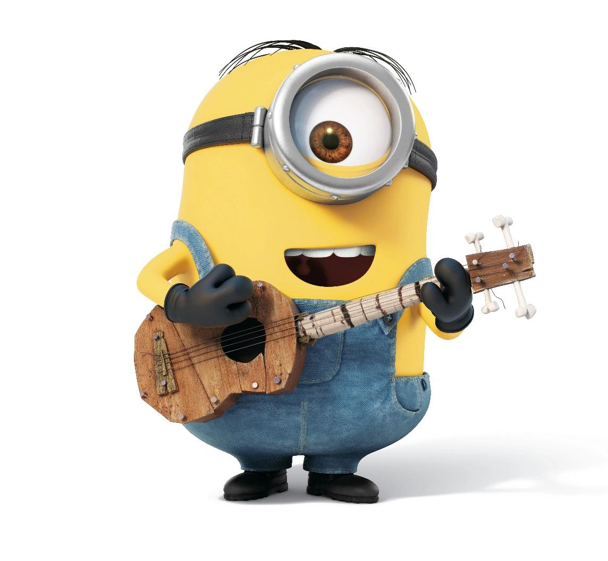

Stuart is one of the Minions that appears in the Despicable Me franchise. He appears in Despicable Me, Despicable Me 2, Despicable Me 3, Minions, Minions: The Rise of Gru, Minions Oscars Segment 2016, Minions Paradise and Santa's Little Helpers.
| Gender | Male |
| Age | 60 million years |
| Eye color | Browm |
| Hair color | Black |